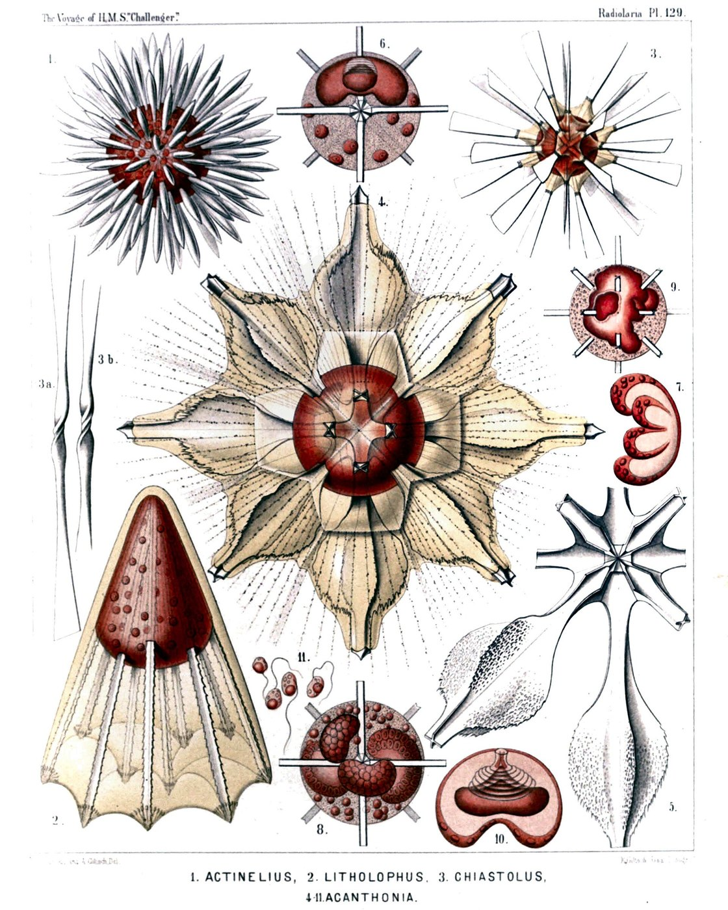
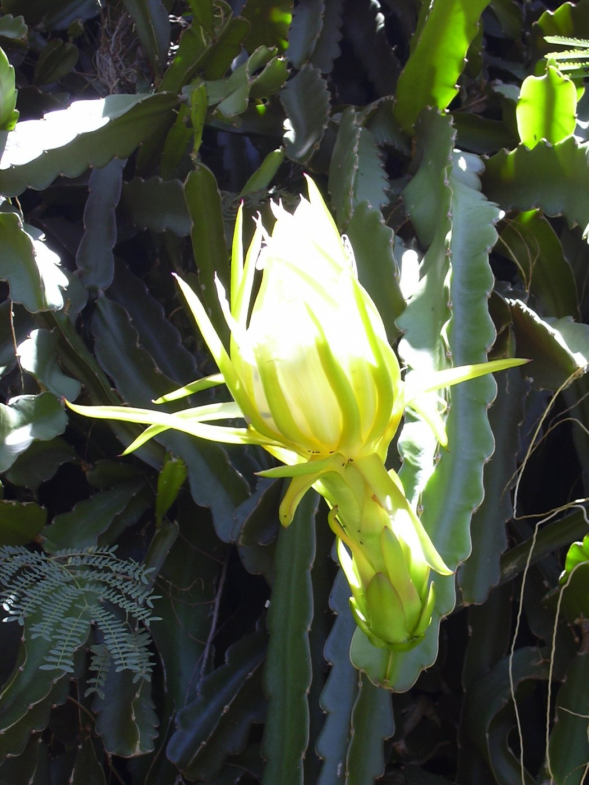
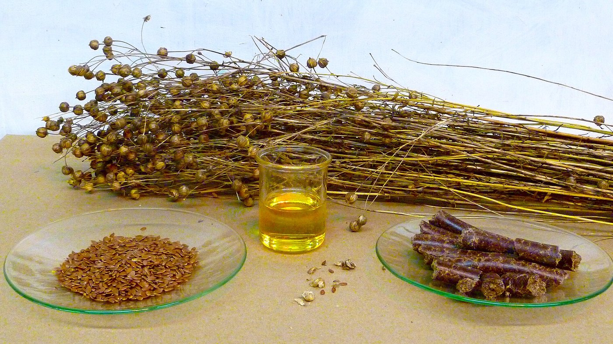

◆ Horticultural Monographs & Science
PHYTOCHEMICAL RESEARCH & BOTANICAL SCIENCE.
Peer-reviewed investigations into Hylocereus betacyanin biochemistry, nocturnal floral pollination mechanisms, and supercritical pitaya seed oil extraction.

MONOGRAPH 01Betacyanin Phytochemistry & Thermal Antioxidant Stability
A deep biochemical exploration of betanin and phyllocactin molecules in red pitaya, evaluating radical scavenging kinetics.

MONOGRAPH 02Night-Blooming Hylocereus: Pollination Biology & Trellis Architecture
Investigating nocturnal anthesis, floral scent chemistry, and optimal vertical trellis geometry in commercial dragon fruit orchards.

MONOGRAPH 03Supercritical Fluid CO2 Extraction of Essential Fatty Acids from Pitaya Seeds
Analyzing the lipid profile, tocopherols, and cardiovascular health implications of cold-pressed dragon fruit seed oil.